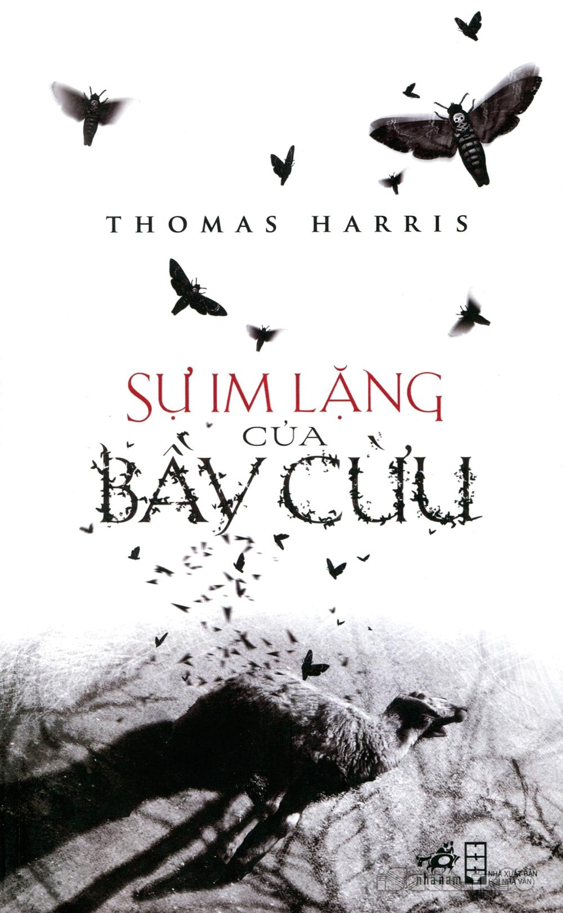

The Silence Of
The Lambs
Sự im lặng của bầy cừu là một tiểu thuyết hình sự của Thomas Harris được xuất bản lần đầu tiên vào
năm 1987 và ngay lập tức tạo cơn sốt cho độc giả. Nó nổi tiếng đến nỗi hơn 30 năm sau, những giá
trị của tác phẩm vẫn nguyên vẹn như thuở ban đầu. Bằng chứng là con quái vật Hannibal Lecter trong kí
ức của những người đương thời vẫn ám ảnh như thể cái tên ấy mới được khai sinh từ ngày hôm qua.

|
Contents
Giới thiệu
- Chương 1
- Chương 2
- Chương 3
- Chương 4
- Chương 5
- Chương 6
- Chương 7
- Chương 8
- Chương 9
- Chương 10
- Chương 11
- Chương 12
- Chương 13
- Chương 14
- Chương 15
|